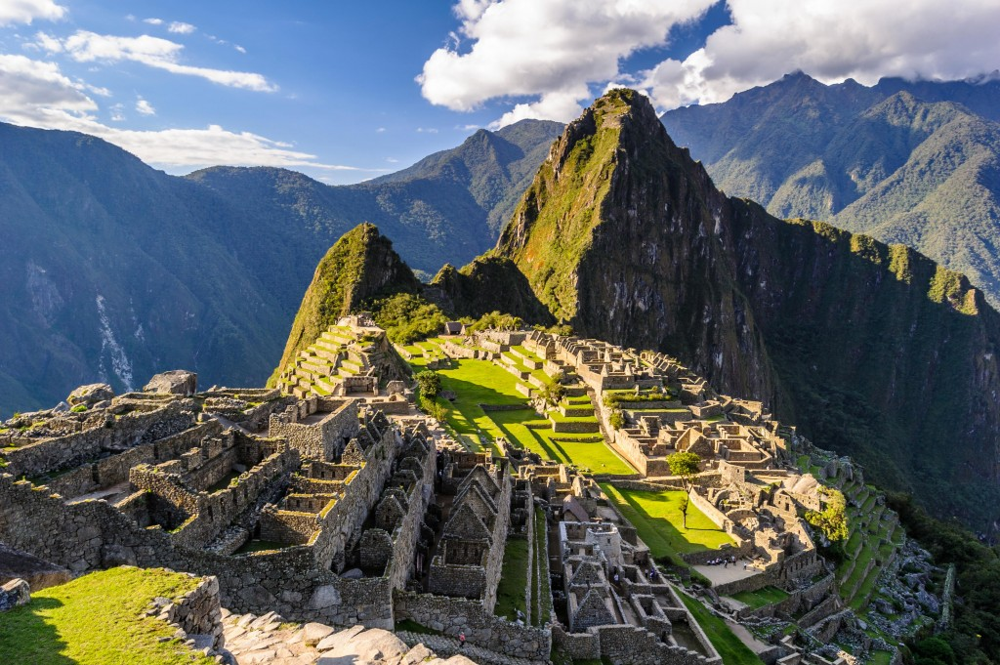

Bienvenidos a viajes Orion
Somos una empresa dedicada a crear experiencias turísticas simples, seguras y memorables para familias, estudiantes y viajeros que quieren conocer nuevos lugares. Nuestro objetivo es ayudarte a planificar cada viaje con información clara sobre destinos, actividades y recomendaciones útiles para disfrutar al máximo.
n esta página te mostramos algunos destinos populares de Sudamérica que combinan naturaleza, historia y cultura. La idea es inspirarte para tu próxima aventura y ofrecerte una guía inicial para empezar a organizar tu recorrido.
Lugares Recomendados
Bariloche

Bariloche es uno de los destinos más visitados del sur argentino por su combinación de paisajes de montaña, lagos cristalinos y bosques. Durante todo el año ofrece actividades para distintos gustos: caminatas, paseos en bicicleta, excursiones en barco y visitas a miradores con vistas panorámicas.
Además de su naturaleza, la ciudad tiene una propuesta gastronómica muy reconocida, especialmente por su chocolate artesanal y sus casas de té. Es un lugar ideal para quienes buscan descansar, hacer turismo fotográfico y disfrutar de un entorno tranquilo con aire puro.
Más información sobre Bariloche
- Subir al Cerro Campanero
- Recorrer el Centro Cívico
- Probar Chocolate Artesanal
Río

Río de Janeiro es una ciudad vibrante que mezcla naturaleza urbana, playas extensas y una identidad cultural muy fuerte. Sus paisajes entre montañas y mar la convierten en un destino atractivo para turistas que desean conocer lugares icónicos y vivir una experiencia dinámica.
La ciudad también destaca por su vida cultural, su música y su ambiente festivo. Recorrer sus barrios, visitar sus miradores y caminar por sus playas permite conocer diferentes caras de Río, desde zonas tradicionales hasta sectores modernos con gran actividad turística.
Sitio oficial de turismo de Río
- Visitar el Cristo Redentor
- Caminar por Copacabana
- Conocer el Pan de Azúcar
Cusco

Cusco fue la capital del Imperio Inca y hoy es uno de los centros históricos más importantes de América Latina. Sus calles de piedra, iglesias coloniales y restos arqueológicos muestran la mezcla entre herencia andina y arquitectura española.
Muchos viajeros eligen Cusco no solo por su valor histórico, sino también porque funciona como punto de partida para conocer el Valle Sagrado y Machu Picchu. Es un destino ideal para aprender sobre cultura, historia y tradiciones locales mientras se recorre una ciudad llena de vida.
- Recorrer la Plaza de Armas
- Visitar Sacsayhuamán
- Planear una excursión a Machu Picchu